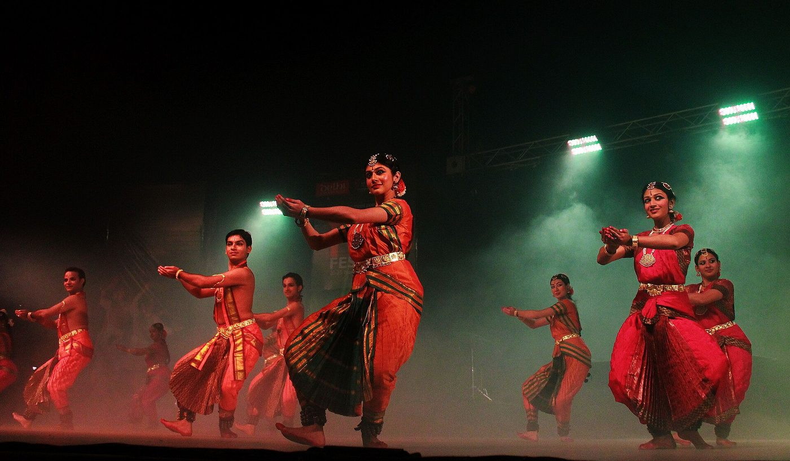

Chapter 15: Bharatanāṭyam¶
Bharatanāṭyam, the dance associated with Tamil Nadu, is today the most widely practised Indian dance form in the world, taught in thousands of schools in India and the diaspora and performed on stages from Chennai to Toronto. It is also the form whose history has been most contested. Its practitioners have often described it as an ancient temple art, continuous with the dance of the Nāṭyaśāstra and the sculptures of Cōḻa temples. Historians have shown that its immediate ancestor was the court and temple dance called sadir or dāsiyāṭṭam, performed by hereditary women dancers — the women later called devadāsīs — and their male teachers, and that the form known as Bharatanāṭyam was created in the 1930s and 1940s when this dance was reconstructed for the concert stage, largely by and for middle-class performers, in the same years in which the hereditary performers were legally and socially dispossessed. Both histories matter, and so does the art itself, whose technique, repertoire, music and institutions are described after the history. The account draws especially on the work of Amrit Srinivasan, Saskia Kersenboom, Avanthi Meduri, Matthew Allen, Janet O’Shea, Davesh Soneji, Douglas Knight and Leslie Orr.
15.1 Temple Women and Court Dancers¶
15.1.1 The medieval evidence¶
Tamil inscriptions from the ninth century onwards record women attached to temples, called by terms such as tēvaraṭiyāḷ (“servant of the god”) and taḷiccēri peṇṭukaḷ (“women of the temple quarter”). The most famous record is the inscription of the Cōḻa king Rājarāja I at the great temple of Thanjavur (completed c. 1010), which lists some four hundred women transferred to the temple from other temples, each given a house and a share of the temple’s revenue. Some of these women danced and sang in the temple’s rituals and festivals; dance was one of the services (with singing, the waving of lamps and the carrying of offerings) that temples maintained. Leslie Orr’s study of the inscriptions has shown, however, that the medieval “temple women” were a varied group — donors, devotees and servants as well as performers — and that most inscriptions say nothing about dance or about sexual relationships; the composite figure of the “devadāsī” as a dedicated temple dancer and courtesan is a later and partly colonial construction projected back onto this earlier history (Orr 2000).
15.1.2 The early modern world¶
The direct ancestors of Bharatanāṭyam belong to the Nāyaka and Maratha courts of Thanjavur, Madurai and Pudukkottai (sixteenth to nineteenth centuries) and to the temples they patronised. In this world, professional women performers served both temples and courts. They were dedicated, often as girls, in a ceremony in which a tāli (marriage emblem) was tied in the name of the deity; as “wives of the god” they could not be widowed, were regarded as auspicious (nityasumaṅgalī, “ever-auspicious women”), performed ritual duties in the temple and danced in its festivals and processions (Kersenboom-Story 1987). They also performed at courts, at the weddings and festivals of wealthy patrons, and in private salons. Their households were matrilineal: daughters inherited property and the profession, and many women formed long-term relationships with patrons outside marriage. The men of the same communities were musicians — nāgasvaram players, drummers — and the dance masters (naṭṭuvaṉārs) who taught the women and conducted their performances. The ensemble of dancer, naṭṭuvaṉār and musicians was called the “small ensemble” (ciṉṉa mēḷam), in contrast to the “big ensemble” (periya mēḷam) of nāgasvaram and tavil (Srinivasan 1985; Soneji 2012).
These women were neither the chaste temple nuns of some modern accounts nor simply the prostitutes of colonial ones. They were highly trained professional artists, among the few literate women of their time, with considerable economic independence, who also lived outside the norms of conjugal respectability; their status and their art depended on patronage relationships that were at once economic, artistic and sexual. Many women of these communities were not dancers at all, and the communities themselves were internally stratified. None of these facts can be dropped to make the story simpler (Soneji 2012; Srinivasan 1985).
15.1.3 The Thanjavur court and the Quartet¶
At the court of the Maratha king Serfoji II (r. 1798–1832) the four brothers known as the Thanjavur Quartet — Ciṉṉayya, Poṉṉayya, Civāṉantam and Vaṭivēlu, from a hereditary family of naṭṭuvaṉārs and disciples of the composer Muttusvāmi Dīkṣitar — composed much of the repertoire of the dance: varṇams, padams, jatisvarams, śabdams and tillānas, many in Telugu and addressed to the gods or to the king. Tradition credits them with arranging the items of a dance recital in the sequence still followed today. Vaṭivēlu later served at the court of Travancore, where he is associated with the development of Mohiniyāṭṭam and of violin playing in Karnatak music; Ciṉṉayya went to Mysore. The descendants and disciples of the Quartet, among them the Pandanallur family of Meenakshisundaram Pillai (1869–1964), were the principal teachers of the dance into the twentieth century (Peterson and Soneji 2008).
The repertoire of the court and temple dancers included more than the solo items of the modern recital. In the eighteenth and nineteenth centuries they also performed dance-dramas called kuṟavañci, in which a fortune-teller woman of the hill tribes (kuṟatti) foretells the union of a heroine with a god or king; one of the best known, the Tirukkuṟṟālak Kuṟavañci by Tirikūṭa Rācappa Kavirāyar, was composed in the early eighteenth century, and others were composed for the Thanjavur temple. The women also sang and danced in the Telugu and Marathi court theatre of Thanjavur (Peterson and Soneji 2008).
15.2 Reform, Abolition and Revival¶
15.2.1 The anti-nautch movement¶
From the 1890s Christian missionaries, Indian social reformers and colonial officials campaigned against the “nautch” (from Hindustani nāc, dance), the performance of professional women dancers at weddings, festivals and official receptions, which they condemned as immoral. The campaign became a campaign against the dedication of girls to temples. Its leading figure in the Madras Presidency was Muthulakshmi Reddy (1886–1968), the first woman member of the Madras Legislative Council and herself the daughter of a woman from the hereditary community, who regarded dedication as a form of sexual exploitation of girls. The reformers were supported by the non-Brahmin Self-Respect movement and by many members of the hereditary communities themselves, some of whom formed caste associations, adopted the name Iśai Vēḷāḷar and sought social respectability by renouncing the profession. Other women of the community, notably the singer Bangalore Nagarathnamma, opposed legislation that would deprive them of their livelihood and their art. After decades of campaigning, the Madras Devadasis (Prevention of Dedication) Act of 1947 made dedication illegal and declared invalid the customary rights attached to it (Srinivasan 1985; Soneji 2012).
The law ended a system that had made many women and girls vulnerable to exploitation. It also, as Amrit Srinivasan’s classic article argued, destroyed the economic and social basis of a community of women artists without providing them with any alternative, and left them stigmatised: their dance was now respectable only if others performed it (Srinivasan 1985).
15.2.2 The making of Bharatanāṭyam¶
While the reformers attacked the dancers, a group of nationalist cultural activists in Madras set out to “save” the dance. The lawyer and freedom fighter E. Krishna Iyer (1897–1968), who had learnt sadir and performed it in women’s costume, campaigned for its recognition as an art, and in the early 1930s the Madras Music Academy began to present dancers from the hereditary families at its annual conferences. In these years the name “Bharatanāṭyam” was adopted for the dance, connecting it with Bharata’s Nāṭyaśāstra and with a pan-Indian classical heritage (on the folk etymology bhāva–rāga–tāla, see Chapter 2) (Meduri 1988; Allen 1997).
The decisive figure was Rukmini Devi Arundale (1904–1986), a Brahmin woman from a Theosophist family, married to the British Theosophist George Arundale. Inspired partly by the ballet of Anna Pavlova, she learnt dance from Mylapore Gauri Ammal and Pandanallur Meenakshisundaram Pillai, gave her first public performance in 1935, and in 1936 founded at Adyar the International Academy of the Arts, later called Kalakshetra. There she created a new institutional form for the dance: a residential school with a fixed curriculum, teaching Brahmin and other middle-class girls and boys; a new costume and stage design based on temple sculpture; a repertoire from which she removed or reinterpreted items she considered erotic, emphasising devotion (bhakti) and spiritual purity; and a series of large-scale dance-dramas on Sanskrit and Tamil themes, beginning in the 1940s (Meduri 2005; Allen 1997).
Scholarly Note: The reconstruction debate
Rukmini Devi’s work has been read in sharply different ways. For her admirers, and for the official history of Indian culture, she rescued a dying art from disrepute and made it a national treasure; Avanthi Meduri’s edited volume presents her as a visionary institution-builder (Meduri 2005). For Amrit Srinivasan, Matthew Allen and Davesh Soneji, the “revival” was also an appropriation: the art of a low-status community of women was taken over by upper-caste performers, renamed, “purified” of its sexuality and given a new history that erased the people who had created it (Srinivasan 1985; Allen 1997; Soneji 2012). Janet O’Shea shows how later dancers have negotiated between these histories in a global art (O’Shea 2007). The debate is not settled. Rukmini Devi did build the institutions through which the dance survived and spread; the cost of that survival was borne by the community from which it was taken.
15.2.3 Balasaraswati¶
The great counter-example to the narrative of rescue was T. Balasaraswati (1918–1984). Born into the family of the vīṇā player Vīṇā Dhanammal, one of the most distinguished musical families of the hereditary community, she learnt dance from the naṭṭuvaṉār K. Kandappa Pillai and music from her family, and began performing as a child. She was celebrated above all for her abhinaya, the depth and spontaneity of her interpretation of padams and jāvaḷis, and for her integration of music and movement. She insisted that the erotic repertoire was itself devotional, that the dance needed no purification, and that the hereditary tradition was its true repository; she resisted the stylistic changes of Kalakshetra. Her career, which included teaching in the United States from the 1960s, is described in Douglas Knight’s biography (Knight 2010). That she was for a long time the most famous representative of her community on the concert stage shows both the strength of her art and how few others from that community were able to continue.
15.2.4 The afterlife of the hereditary tradition¶
The hereditary performers did not simply disappear. Some continued to teach as naṭṭuvaṉārs to the new middle-class dancers; some women continued to perform in private or in rural contexts, in Tamil Nadu and in coastal Andhra, where the kalāvantula tradition persisted into the late twentieth century, and where the dancer Swapnasundari has, since the late twentieth century, presented the repertoire she learnt from kalāvantula women under the name Vilāsini Nāṭyam, a revival that raises, as the earlier ones did, the question of who may claim and present the art of the hereditary dancers; and many of their descendants left the arts and sought other livelihoods. Davesh Soneji’s ethnography of these communities records their memories of performance and the shame and loss that accompanied the transformation of their art into “Bharatanāṭyam” (Soneji 2012). Recent scholarship and some contemporary dancers have sought to acknowledge this history openly, and to perform the old repertoire with credit to those who preserved it.
15.3 Technique¶
15.3.1 Posture and line¶
Bharatanāṭyam’s movement is built on the half-seated araimaṇḍi, with the knees turned out and the heels together (Figure 15.1), from which the dancer steps, stamps, jumps and turns while keeping the torso upright. Its aesthetic emphasises clear lines — of the arms extended from the shoulders, of the legs in the araimaṇḍi and in extended positions, of the body in sculptural poses held at the end of phrases — and the precise articulation of rhythm by the feet, whose ankle bells (salaṅkai) make every stamp audible. The full squat (muḻumaṇḍi) and kneeling positions are used in some aḍavus and poses.


15.3.2 Aḍavus¶
The pure-dance vocabulary is taught through the aḍavus (Chapter 13), grouped in families according to their characteristic action or syllables: taṭṭaḍavu (striking the feet), nāṭṭaḍavu (stretching a leg and striking the heel), viśāru aḍavu (sweeping movements), tattimeṭṭaḍavu (alternating flat foot and heel), kuditta meṭṭaḍavu (jumping), sarikkal (sliding), maṇḍi aḍavu (kneeling and squatting) and tīrmāṉa aḍavu (cadential). Each is practised in three speeds. The number and naming of the aḍavus vary between schools; the systematic sequences taught today were organised largely in the twentieth century.
15.3.3 Abhinaya¶
The expressive technique of Bharatanāṭyam combines the hand gestures of the Abhinayadarpaṇa (Chapter 14), the movements of eyes, brows, head and neck, and the conventions of character and situation described in Chapter 3. The dancer usually plays a woman — the heroine, her confidante, or a devotee — and moves between the roles of narrator and characters. In the expressive items the dancer elaborates each line of the text through repeated interpretations (sañcāri), and the finest performers improvise their elaborations in response to the music. The expressive repertoire of padams and jāvaḷis is the art’s richest inheritance from the hereditary performers, and the art in which Balasaraswati excelled.
15.3.4 Styles (bāṇi)¶
Bharatanāṭyam is transmitted in stylistic lineages called bāṇi, named after the villages or institutions of their teachers. The Pandanallur bāṇi, associated with Meenakshisundaram Pillai and his successors, is known for its geometric clarity and restraint; the Vazhuvoor bāṇi of Ramaiah Pillai (1910–1991) for its flowing movement and dramatic flair; the Thanjavur bāṇi for its continuity with the Quartet’s family; and the Kalakshetra style, developed from the Pandanallur tradition by Rukmini Devi and her teachers, for its precision, its angular line and its large-scale choreography. Bharatanāṭyam also had a distinct history in the Mysore court, where dancers performed until the mid-twentieth century. Contemporary dancers often combine elements from several lineages.
15.4 The Recital¶
The solo recital (mārgam) follows a sequence traditionally attributed to the Thanjavur Quartet and adapted in the twentieth century (O’Shea 2007; Kothari 1979):
- Puṣpāñjali or kauttuvam.
- An invocation. The kauttuvam, a short composition in praise of a deity, belongs to the temple repertoire of the hereditary dancers; the puṣpāñjali, an offering of flowers, is a modern addition widely used today.
- Alārippu.
- A short piece of pure dance, danced to drum syllables in a simple tāla, which progressively brings the eyes, neck, shoulders, arms and legs into movement; its name is often explained as “flowering”.
- Jatisvaram.
- Pure dance to a composition of solfa syllables (svara) in a rāga, alternating with rhythmic passages (jati).
- Śabdam.
- The first expressive item: a song, often in Telugu, praising a god or a patron, with short descriptive passages and pure-dance links.
- Varṇam.
- The centrepiece, lasting half an hour or more. Its first half has a pallavi and anupallavi interpreted expressively, each followed by passages of pure dance (jatis) danced to rhythmic syllables, and a muktāyi svaram; its second half (caraṇam) alternates a refrain with passages of solfa (eṭṭugaḍa svarams), each danced and then interpreted expressively. The varṇam demands stamina, rhythmic precision and expressive depth, and tests the dancer more than any other item.
- Padam and jāvaḷi.
- Slow expressive songs of love; the padams of Kṣetrayya and the Tamil padams of Subbarāma Iyer and others are among the masterpieces of the repertoire.
- Tillāna.
- A brilliant pure-dance item to a lively composition of rhythmic syllables, ending with a short passage of text.
- Maṅgaḷam
- or a closing verse.
The music of the recital is Karnatak, but the dance repertoire — especially the pada varṇams, padams and jāvaḷis — forms a body of music partly distinct from the concert repertoire, and many compositions survive only because dancers and their musicians preserved them.
15.5 Music, Costume and Stage¶
15.5.1 The ensemble¶
The dancer is accompanied by a naṭṭuvaṉār, who recites the rhythmic syllables and keeps time with cymbals; a vocalist; a mṛdaṅgam player; and one or more melodic instrumentalists, usually on violin, flute or vīṇā. In the hereditary tradition the naṭṭuvaṉār was the teacher and leader of the performance, and in the early decades of the twentieth century the dancer sang as well as danced; in the modern concert the dancer is silent, and the dancer’s teacher, male or female, often conducts. The art of conducting, naṭṭuvāṅgam, is now taught to women as well as men.
15.5.2 Costume and jewellery¶
The costume of Bharatanāṭyam was redesigned in the 1930s and 1940s. The dancers of the hereditary tradition performed in a sari, sometimes with trousers beneath; Rukmini Devi and her collaborators designed a tailored costume of silk, with a fan of pleats between the legs that opens in the araimaṇḍi, and adopted a set of “temple jewellery” modelled on the ornaments of sculpture, many of them made by craftsmen of Nagercoil and other towns. The set typically includes the head ornaments representing the sun and moon, a forehead ornament (neṯṯi cuṭṭi), earrings (jimikki), a nose stud, necklaces, armlets (vaṅki), a waist belt (oṭṭiyāṇam), an ornament for the plaited hair (jaṭai nākam) with flowers, and the ankle bells. The hands and feet are painted with red dye (ālta) to make their movements visible. Two styles of costume are common, one with trousers (“pyjama”) and one resembling a draped sari (O’Shea 2007).
15.5.3 Stage and temple¶
The modern dance is performed on the proscenium stage of the concert hall, often with a small image of Naṭarāja placed at the side and a lamp lit before the performance. Many dancers speak of the stage as a temple and of the performance as an offering. The image is a twentieth-century convention, part of the effort to present the dance as a temple art; the dance of the hereditary performers was performed in many settings, sacred and secular. Some contemporary dancers have returned to temple festivals as venues, now as invited artists rather than as ritual servants.
15.6 Training, the Araṅgēṯṯam and the Institutions¶
15.6.1 Training¶
A Bharatanāṭyam student begins with the aḍavus, practised daily, together with the hand gestures and the head, eye and neck movements of the Abhinayadarpaṇa; then learns the items of the recital in order of difficulty, from the alārippu to the varṇam; and finally learns the expressive repertoire. The training lasts many years and was traditionally conducted in the teacher’s home, the student living or spending long hours there; today most students learn in classes, often once or twice a week, alongside school or work, while professional dancers train in institutions such as Kalakshetra or with a senior teacher. Universities in India and abroad offer degrees in dance. The training of the body and of the mind’s understanding of music and poetry go together; the best dancers are also musicians and readers of the texts they interpret.
15.6.2 The araṅgēṯṯam¶
The araṅgēṯṯam (Tamil, “ascending the stage”) is the formal debut of a dancer, in which the student performs a full recital before an invited audience, with the teacher conducting. In the hereditary tradition it marked a young woman’s entry into the profession; in the twentieth century it became a rite of passage for middle-class girls, a demonstration of accomplishment and of the family’s cultural capital, and in the diaspora a major social event. The elaborate and expensive araṅgēṯṯam has been criticised by teachers who feel that it marks the end of serious study rather than its beginning, and by scholars as an emblem of the class transformation of the art (O’Shea 2007).
15.6.3 Institutions¶
The institutions that shaped modern Bharatanāṭyam include Kalakshetra (now a national institution), the dance school of the Madras Music Academy, the Darpana Academy founded in 1949 at Ahmedabad by Mrinalini Sarabhai (1918–2016), and many private schools in India and abroad. The Sangeet Natak Akademi, founded in 1952–53, recognised Bharatanāṭyam as one of the “classical” dances, gave awards to its leading teachers and dancers, and supported festivals and documentation (Chapter 23).
15.7 Dancers and Teachers of the Twentieth Century¶
The history of modern Bharatanāṭyam is often told through two women, Rukmini Devi and Balasaraswati, but it was made by many more. The naṭṭuvaṉārs of the hereditary families — among them Meenakshisundaram Pillai of Pandanallur, Ramaiah Pillai of Vazhuvoor, Kandappa Pillai, and K. P. Kittappa Pillai, a descendant of the Thanjavur Quartet who taught and published the Quartet’s compositions — trained most of the dancers of the new generation, and their lineages are the bāṇis of today. Women of the hereditary families, such as the Mysore court dancer K. Venkatalakshamma, transmitted repertoire and abhinaya to new performers, often with little public recognition (Soneji 2012; Kothari 1979).
Among the dancers of the new middle-class generation, some became national figures. Kamala, trained in the Vazhuvoor style, became famous as a child dancer in films and later as a performer and teacher in the United States; Vyjayanthimala combined a career as a film star with serious Bharatanāṭyam performance; Mrinalini Sarabhai founded the Darpana Academy and created dance-dramas on contemporary themes; Yamini Krishnamurthy (1940–2024), equally celebrated in Kuchipudi, toured widely. Later generations included scholars and choreographers as well as performers: Padma Subrahmanyam, who reconstructed the karaṇas of the Nāṭyaśāstra from texts and temple sculpture (Chapter 2); Chandralekha (1928–2006), who used the vocabulary of Bharatanāṭyam and of yoga and martial arts to create contemporary work critical of the form’s conventions; and dancers such as Alarmel Valli, Malavika Sarukkai and Leela Samson, who developed distinctive individual approaches to the classical repertoire. Men also returned to the form after the 1930s, among them Ram Gopal, the Kalakshetra-trained V. P. Dhananjayan and C. V. Chandrasekhar, and many younger dancers in India and abroad (O’Shea 2007; Bharucha 1995).
The shift from hereditary to middle-class performers also changed the position of the teacher. In the early twentieth century the naṭṭuvaṉār was usually a man of the hereditary community, who taught, composed, conducted and arranged performances, and whose authority rested on his family’s knowledge. By the later twentieth century many teachers were women dancers from non-hereditary backgrounds who had studied with such men and then opened their own schools, and many of them conducted the performances of their students. The professional dance school, run by a celebrated dancer, became the characteristic institution of the art, and the hereditary teachers, with a few notable exceptions, faded from public view (O’Shea 2007; Soneji 2012).
15.8 Bharatanāṭyam in the Modern World¶
From the mid-twentieth century Bharatanāṭyam spread far beyond Tamil Nadu. It was taken up by dancers from every region and community of India, became a staple of school and college cultural programmes and a symbol of Indian culture in official presentations abroad, and travelled with the Tamil and wider South Asian diasporas to Sri Lanka, Malaysia, Singapore, Britain, North America, Australia and elsewhere. Janet O’Shea’s study shows how dancers in different places have used the form to make claims about national, regional, religious and diasporic identity, and how the meanings of “tradition” shift accordingly (O’Shea 2007).
Within India the repertoire itself has widened. Dancers have set Tamil Caṅkam poetry, the hymns of the Āḻvārs and Nāyaṉmārs and modern poetry in many languages; Padma Subrahmanyam presents her reconstruction of the karaṇas as a distinct style, Bharatanṛtyam; and contemporary choreographers have used the vocabulary of the form against its devotional and gendered conventions (Chapters 13 and 23).
At the same time the form remains marked by its history. Debates continue about caste and access — whether the dance remains the preserve of particular communities, how the descendants of the hereditary performers are acknowledged, and how far the devotional framing adopted in the 1930s excludes other meanings. Bharatanāṭyam is best understood neither as an unchanged ancient art nor as a simple invention, but as a living tradition that was radically reshaped in the twentieth century and continues to change (Soneji 2010; Gaston 1996).
Further Reading¶
Soneji (2010) collects the key essays on Bharatanāṭyam’s history and practice, including Srinivasan (1985) and Allen (1997). Soneji (2012) is the essential study of the hereditary performers and their afterlife, Orr (2000) the major study of medieval temple women, and Kersenboom-Story (1987) an account of the ritual role of the devadāsī. Meduri (2005) and Knight (2010) present the two great figures of the twentieth century, and O’Shea (2007) the global history of the form. Gaston (1996) and Kothari (1979) describe technique and repertoire, and Krishnan (2019) shows how early Tamil cinema shaped the modern form.